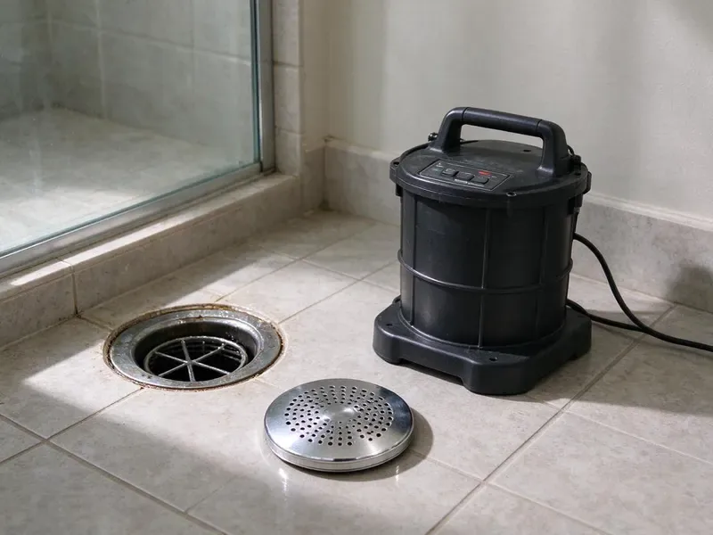

Drain Jetting in Burlington, VT
Snaking punched a hole and the Burlington, VT sink is slow again a month later. A jetter takes off the buildup that caused it.
- Vermont Drain Experience
- Hose Sized for Branch Lines
- Camera Look When Needed
- Same-Day Jetting

Want That Line Clean in Burlington, VT?
Phone CKV Plumbing and we will set the jetter up at your cleanout.
Drain Jetting for Burlington, VT Homes
CKV Plumbing runs jetting service across Burlington, VT for kitchen, laundry, bathroom and sewer lines. With the correct nozzle and pressure, grease, sludge, scale and fine roots all wash off. One visit usually does it.
Work we handle every week:
- Drop cloths and splash containment indoors
- Grease, scale and root cutting
- Rotating and penetrating nozzles

Additional Drain Services Services in Burlington, VT
From stubborn kitchen clogs to main sewer backups, our drain services in Burlington, VT clear the line and keep it clear with camera-verified results.


Customers
Why Choose CKV Plumbing for Drain Jetting in Burlington, VT?
Compact equipment for interior lines. We can work under the sink or through a wall cleanout with a small hose reel, so there is no truck hose snaking through your front door and across the living room. Floors get covered.
- Whole Pipe, Not a Hole, The whole wall gets cleaned, not just a path through the middle.
- Root Cutting, Root-cutting nozzles slice through root masses common in older Vermont neighborhoods.
- Longer Results, Clean walls give grease and lint little to grab.
Citywide Coverage
Every neighborhood in Burlington gets drain jetting from CKV Plumbing. Commercial kitchens, older houses and newer tracts all clog for their own reasons. Every type is routine.
Experienced Team
Small-diameter lines need a light hand. Hose feed and pressure stay controlled around bends, so weak old pipe does not get pushed into a leak. They go slow and steady.
Safety-First Approach
Pressure gets set for small interior lines. Seriously damaged pipe does not get jetted, and containment keeps water where it belongs. Safety comes first.
Trusted Certified Burlington Plumbing Services Professionals
At CKV Plumbing, we take pride in licensed, certified plumbing services throughout Burlington, VT. Credentials matter in this trade. Every repair, install and maintenance visit follows strict safety and quality rules, and the plumbers doing the work carry recognized industry credentials.
Call Us Now PHCC Plumbing Contractor Recognition
PHCC Plumbing Contractor Recognition Better Business Bureau (BBB) Accreditation
Better Business Bureau (BBB) Accreditation Angi Certified Pro
Angi Certified Pro ISO 9001 Quality Management Certification
ISO 9001 Quality Management CertificationWater Jetting Kitchen, Laundry and Sewer Lines in Burlington, VT
Camera Check After Jetting in Burlington, VT
A clean pipe is easier to read. After jetting, we often run a camera down the line to confirm the buildup is gone and to look for cracks, offsets or root entry points that were hidden under the grease. You see it on screen. That way any repair recommendation is based on footage, not a guess.

Floor Drain and Utility Sink Jetting in Burlington, VT
Garage floor drains get forgotten. Mud, paint rinse, sawdust and sand from utility and mop sinks settle in the trap and the line beyond it until a heavy wash day sends water across the floor. We jet both. A dry trap lets sewer gas in, so we check the primer too.
Jetting Versus Snaking Costs in Burlington, VT
Jetting costs more per visit than a cable. But if you are paying for the same clog three or four times a year, a single jetting visit that holds for a year or more usually comes out cheaper by the second season. For a single hair clog, a cable is fine. We quote both on site.
Commercial Kitchen Drain Jetting in Burlington, VT
Prep sinks, dish lines and floor sinks all carry grease. Even with a properly sized interceptor, the branch lines inside the building build up fast, and a busy kitchen can go from fine to flooded floor sinks in a single weekend. We put it on a schedule. Work happens before opening or after close. You get a record for inspections.
Sewer Line Jetting in Burlington
A plugged main backs up the lowest drain first. We run a larger jetter, up to 4,000 PSI at a higher flow, from the outdoor cleanout toward the city main to cut roots and flush out sludge and paper. Roots need a cutter nozzle. We follow with a camera to find the joint the roots came in through.
Jetting for Businesses in Burlington, VT
Offices, salons and shops have their own drain trouble. Salons fight hair and chemical residue, offices see paper towels and food in break-room sinks, and shops with mop sinks send down grit that settles in the low spots. Restrooms clog too. We can come before you open or after you close.
Scale and Sludge Removal in Burlington
Town water systems in Burlington and other communities are generally reliable, but older service lines can add sediment and discolored water. Hard scale forms on the pipe wall, and soap and sludge pile onto it until the pipe narrows. We use a rotating head for scale. Sludge washes right out. The camera shows how much opening you got back.

Jetting Hard Water Scale in Burlington
Galvanized and cast iron drains collect mineral scale. Rough scale catches hair and grease on every flush, so clogs return faster year after year. We use a scale-cutting head. Before and after camera footage shows how much pipe wall is left.
Drain Jetting Near Me in Burlington, VT
Local techs know local pipe. Around Burlington, we carry root cutters for old clay laterals and scale heads for galvanized branches because we see both constantly here. Fewer return trips. You can book a visit by phone.
Searching for drain jetting near you in Burlington, VT? CKV Plumbing has techs with jetters on the trucks every day. Our trucks carry cables and jetters, so most clogs get handled on one same-day visit. Being nearby helps.
CKV Plumbing at a Glance
- Fully licensed plumbing team covering Burlington, VT
- Same-day appointments and 24/7 emergency response
- Clear written estimates, no hidden fees
- 4.8-star rated by 553+ Vermont customers
Burlington Map
Burlington Information
- Population
- 44,528
- Area codes
- 802/860/603
- Service area
- Burlington and towns within a 40 mile drive
- Nearby
- Winooski, South Burlington, Essex Junction, Shelburne
Roots chase moisture into sewer joints, and moving ground cracks those joints further under Burlington, VT homes. Most Vermont homes have full basements, many with fieldstone or older foundations that can let in groundwater during wet seasons.
Expert Services
Call CKV Plumbing for honest, reliable plumbing from people who know the trade in Burlington, VT.
Our Specialized Plumbing Services in Burlington, VT
At CKV Plumbing, we handle the full list of plumbing services across Burlington, VT. We go from leak detection all the way to full system installations, for homes and commercial buildings, and we do it quickly at a fair price. Explore our core services below:


Start to Finish: Drain Jetting in Burlington, VT
From the first call to the last flow test, here is the routine.
Call to Schedule
Call (802) 209-5139 and tell us which drains are slow. We set a time that works for you.
Look at the Line
The tech finds the cleanout and often runs a camera. We learn the pipe material and what is in it.
Jet the Pipe
High-pressure water scrubs grease, scale and roots off the walls. We dial pressure to the material.
Frequently Asked Questions About Drain Jetting in Burlington
Jetting one interior branch line in Burlington usually costs $250 to $550. Restaurants and multi-drain jobs are priced in person.
Yes, root cutting is a routine part of jetting. A cutter nozzle shreds the roots and the water flushes them out, a common job in older neighborhoods. Follow-up camera recommended.
A snake bores a hole through the clog. Jetting scrubs the entire pipe wall, so the buildup that causes repeat clogs is actually gone. Results hold longer.
It helps to have an adult there. We need access to fixtures, and you will want to see what we find. Pets should be put away.
Jetting itself uses no parts. When a repair is needed, we use PVC, cast iron and cleanout fittings that carry the correct ASTM or CISPI markings, from established manufacturers stocked at our supply houses. Brands vary by supplier.
Professional compact jetters from established drain equipment makers. We pair them with nozzles built for grease, scale and debris.
Done right, jetting is safe on PVC, cast iron and clay in decent shape. Badly rusted or broken pipe can fail under pressure, so we scope questionable lines first. Pressure is adjustable.
One to two hours for most interior lines, setup and testing included.
Hear From Customers Who Hired Our Plumbing Experts

Lisa C.
Water was pouring out from under the washing machine on a holiday weekend. CKV Plumbing talked me through closing the valves over the phone and had a plumber at the house within ninety minutes. It was a burst fill hose.
Emergency Plumbing · St. Albans, VT
Jessica T.
We were adding a gas range in a kitchen remodel and needed a new line run from the meter. The plumber pulled the permit, ran the pipe through the crawl space, and had it inspected and approved within the week.
Gas Line Repair · Middlebury, VTRachel N.
Hard water was leaving white crust on every faucet and our dishwasher was struggling. The tech tested the water, recommended a softener sized for a family of five, and installed it with a bypass valve in one afternoon. The spots on our glasses are gone.
Water Softener · Shelburne, VT
Robert G.
The camera showed a full break in our clay sewer line near the street. CKV Plumbing replaced it with a trenchless pipe burst, so the only digging was two small pits in the yard. They let us watch the footage before and after.
Sewer Line Replacement · South Burlington, VT
Mark T.
The floor drain in our office break room backed up every few weeks. The plumber ran a cable, then put a camera down and found roots at a joint about thirty feet out. Seeing it on the screen made the decision easy.
Drain Cleaning · St. Albans, VTSofia M.
Two new toilets went in during one visit. The tech set them on new wax rings and swapped the old supply lines. He also noticed our bathroom faucet dripping and replaced the cartridge while he was there. No mess left behind.
Toilet Installation · Shelburne, VT